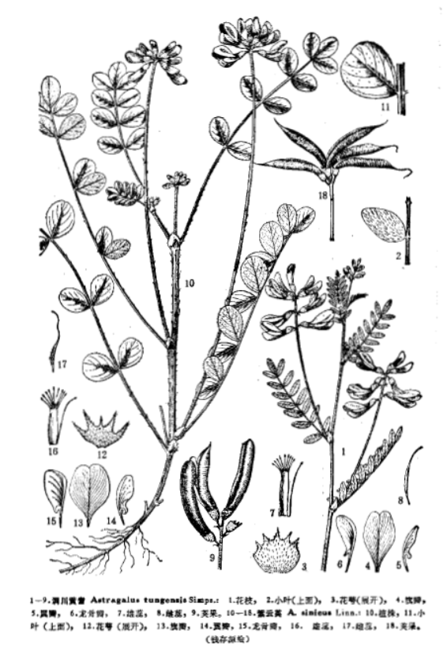

出现篇目
别名 凌霄（苏恭）、陵苕（《别录》）、陵时（郭璞）、女葳（甄权）、茇华（《别录》）、武威（《吴普》）、瞿陵（《吴普》）、鬼目（《吴氏》）
古代记载 《毛诗故训传》
苕，草也。笺云：防之有鹊巢，邛之有美苕，处势自然。（《毛传》注《防有鹊巢》）
《毛诗草木鸟兽虫鱼疏》
苕，苕饶也，幽州人谓之翘饶，蔓生，茎如劳豆而细，叶似蒺藜而青，其茎叶绿色可生食，如小豆藿也。
《毛诗正义》
《苕之华》传云：“苕，陵苕。”此直云“苕，草”。彼陵苕之草好生下湿，此则生于高丘，与彼异也。陆机《疏》云：“苕，苕饶也。幽州人谓之翘饶。蔓生，茎如劳豆而细，叶似蒺藜而青，其茎叶绿色，可生食，如小豆藿也。”《毛诗正义》疏《防有鹊巢》）
《诗集传》
苕、苕饒也。莖如勞豆而細、葉似蒺蔾而青。其莖葉綠色。可生食。如小豆藿也（《诗集传》集注《防有鹊巢》）
《本草纲目》
《别录》曰∶紫葳生西海川谷及山阳。 恭曰∶此凌霄花也。连茎叶用。《诗》云∶有苕之华，云其黄矣。《尔雅》云∶陵苕∶黄华，蔈；白华，茇。山中亦有白花者。 颂曰∶今处处皆有，多生山中，人家园圃亦或栽之。初作蔓生，依大木，久延至巅。 其花黄赤，夏中乃盛。今医家多采花干之，入女科药用。 时珍曰∶凌霄野生，蔓才数尺，得木而上，即高数丈，年久者藤大如杯。春初生枝，一枝数叶，尖长有齿，深青色。自夏至秋开花，一枝十余朵，大如牵牛花，而头开五瓣，赭黄色，有细点，秋深更赤。八月结荚如豆荚，长三寸许，其子轻薄如榆仁、马兜铃仁。其根长亦如兜铃根状，秋后采之，阴干。
当代记载 《中国植物志》
紫云英（Astragalus sinicus），豆科，黄芪属植物。二年生草本，多分枝，匍匐。花冠紫红色或橙黄色。荚果线状长圆形，稍弯曲，黑色；种子肾形，栗褐色。花期2-6月，果期3-7月。
产长江流域各省区。生于海拔400-3000米间的山坡、溪边及潮湿处。现我国各地多栽培，为重要的绿肥作物和牲畜饲料，嫩梢亦供蔬食。模式标本采自浙江宁波。

<中国植物志>